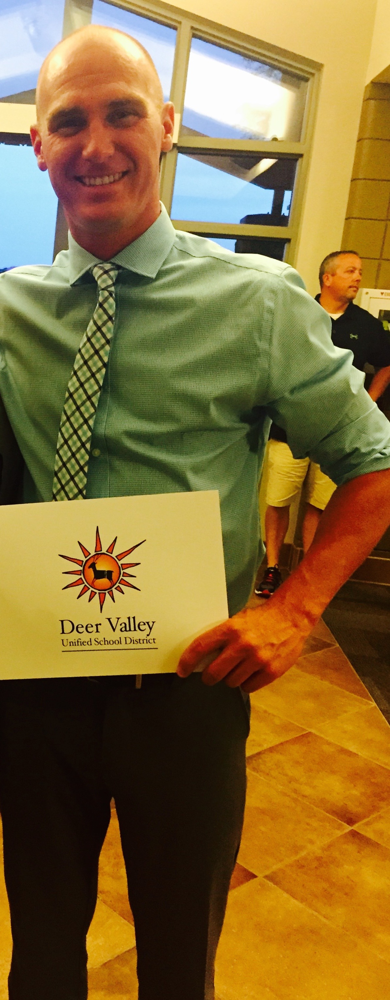

Hello! My name is Kevin Naughton. Since graduating from Eastern Michigan University, in the spring of 2007, I've been working as a middle and high school math teacher.
Upon graduation, I moved out to Phoenix, Arizona for 8 years. While I enjoyed my time living out West, I wanted to come home to Michigan to be closer to family and friends.
At the end of the 2015 school year I packed up my things and began the long trek from the Sonoran Desert to the Great Lakes.
I'm excited to participate in Grand Circus's Front-End Bootcamp and look forward to learning the necessary skills needed to be a successful developer.
I'm excited to participate in Grand Circus's Front-End Bootcamp and look forward to learning the necessary skills needed to be a successful developer.
"You have brains in your head and feet in your shoes, you can steer yourself in any direction you choose!" - Dr. Seuss
Quotes
Below are five of my favorite quotes. They are quotes that I have read, heard or encountered throughout my life.
I often use these quotes in my classroom, I enjoy sharing them with students. I believe that quotes are great conversation starters, it allows people an opportunity to share how they perceive something or what it may mean to them personally.
- "You must do the things you think you cannot do." - Eleanor Roosevelt
- "The way to get started is to quit talking and begin doing." - Walt Disney
- "I believe life is an intelligent thing: that things aren't random." - Steve Jobs
- "With self-discipline most anything is possible." - Theodore Roosevelt
- "He who is not courageous enough to take risks will accomplish nothing in life." - Muhammad Ali